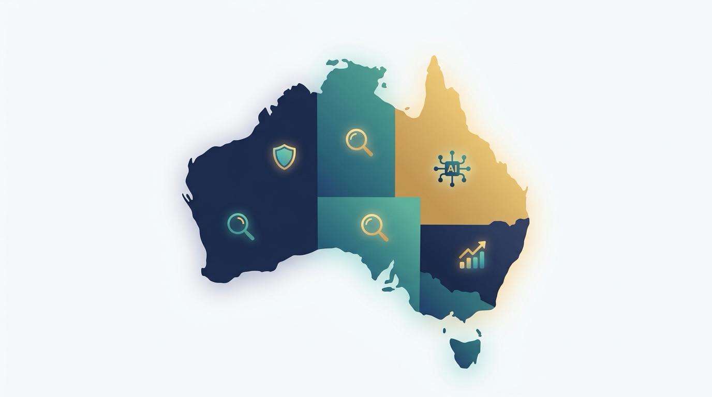

SEEK job ads have fallen for eleven straight months. LinkedIn still ranks AI Engineer the fastest-growing role in the country. Jobs and Skills Australia's own shortage list just recorded its first sustained decline since it started tracking in 2021. All three of these things are true at the same time, and none of them tell the full story on its own. This is a map of where growth in data science, AI and cyber security careers is actually concentrated in Australia through 2031, what the roles pay with real ranges rather than one flattering number, and which employers are hiring for these exact skills under job titles nobody thinks to search for.

Two headlines about the same labour market can both be accurate and still point in opposite directions. In June 2026, job ad volume on SEEK fell 5.8 percent year over year, the steepest decline recorded since early 2025 and an eleventh consecutive month of contraction. In the same stretch, LinkedIn's "Jobs on the Rise" report named AI Engineer the single fastest-growing role in the country, and Indeed's Hiring Lab found that AI mentions in Australian job postings nearly doubled in twelve months. The market is not uniformly hot or uniformly cold. It is bifurcating, hard, between a shrinking pool of generalist and junior openings and a genuinely under-supplied layer of mid-to-senior AI, data and cyber security specialists. This piece works through what that split means for anyone building a career in these fields between now and 2031: where the growth is real, what it pays, where the less obvious roles are hiding, and how to actually get in.
Start with the official classification system, because it changed underneath this market. The Australian Bureau of Statistics gave Data Scientist its own dedicated occupation code, 223234, under the new OSCA 2024 classification, sitting inside the broader Data Professionals unit group. That sounds bureaucratic, but it matters: before this, "data scientist" had no clean official box, which made it harder to track pay, headcount and growth with any rigor. Cyber security has a cleaner history. Jobs and Skills Australia's occupation and industry profile for ICT Security Specialists projects employment in that group growing 14.2 percent from May 2024 to 2029, more than double the 6.6 percent national average across all occupations.
Layered on top of that is the Tech Council of Australia's AI workforce modelling, produced with Microsoft, LinkedIn and Workday. It projects Australia's AI specialist workforce growing from roughly 40,000 people in 2024 to about 85,000 by 2027, against projected demand of around 140,000 over the same window: a shortfall of up to 60,000 specialists, concentrated specifically in mid and senior production-grade roles rather than entry-level ones. The same body of research puts a broader figure on the table, up to 200,000 AI-related jobs created in Australia by 2030, inside a wider claim that the whole Australian tech workforce needs to reach about 1.3 million people by 2030, roughly 312,000 more than current supply trends deliver.
Demand-side hiring signals point the same direction as the workforce modelling. Indeed's Hiring Lab found that AI mentions in Australian job postings rose from 3.3 percent in February 2025 to 6.2 percent in February 2026, and that in software development and data and analytics specifically, 43 percent of postings now mention AI. LinkedIn's 2026 "Jobs on the Rise Australia" report, based on hiring and posting data from 2023 through mid-2025, ranks AI Engineer the fastest-growing role nationally, ahead of every other occupation tracked.
None of that cancels out the SEEK contraction. Overall ad volume has been falling for close to a year, and graduate-level hiring has been the softest part of that: Indeed's Hiring Lab reporting on graduate outcomes through 2025 and into 2026 shows the share of graduate postings in high-AI-exposure occupations easing back from prior-year peaks, alongside a broader pullback in entry-level hiring that most recruiters in the sector describe anecdotally as a sharper contraction than the aggregate graduate figures show on their own. Read together, the honest picture is a market where total advertised volume is shrinking, but the AI- and cyber-adjacent slice of that shrinking pie is one of the only parts still growing, and it is growing fastest at levels above entry.
Inside cyber security, the growth story is not evenly spread across the discipline, and Tier-1 Security Operations Centre work is the clearest casualty. Multiple security vendors, echoed by Gartner's own published commentary on AI SOC agents, now describe automated triage tools resolving or escalating more than 90 percent of Tier-1 alerts by 2026, covering initial enrichment, categorisation and even some containment actions without a human analyst in the loop. Gartner's own longer-range projection is that AI will automate 50 percent of Level 1 SOC responsibilities by 2028. Vendor blogs are, unsurprisingly, the loudest voices making these claims, so treat the specific percentages as directionally credible rather than precisely measured. The direction itself, however, is consistent across every vendor and analyst source found for this piece: the classic entry rung into cyber security, junior Tier-1 alert triage, is disappearing fastest of any role in the field.
The often-cited cyber security workforce shortfall numbers for Australia are genuinely unreliable as a single figure. Different sources circulate estimates ranging from roughly 2,300 to 30,000 unfilled roles, depending on vintage and methodology, and most of them trace back through several rounds of citation to the same aging AustCyber-lineage estimate. None of that should be quoted as an authoritative headline number. A more credible, more current demand signal comes from workforce surveys: 54 percent of Australian cyber security teams report being understaffed, and 58 percent report unfilled positions, according to industry survey data reported through the Australian Cyber Security Magazine. That is a far more defensible way to describe the shortage than any single national head-count figure.
Australian Bureau of Statistics data on employee earnings puts ICT Professionals among the highest-earning occupation groups nationally, with median weekly earnings around $2,300 as of August 2025, roughly $120,000 annualised. Robert Half's 2026 Australia Technology and IT Salary Guide adds an important counter-note to the hype: salary growth for cyber security and data engineering specifically has flattened compared to the sharp increases seen in prior years, even as demand for the skills stays steady. Growth is real, but the era of double-digit annual pay jumps in these roles looks to be over for now.
| Role | Typical range (AUD) |
|---|---|
| Data Scientist | $115,000 to $135,000 median; senior ML/AI-focused up to $180,000 to $215,000 |
| Cyber Security Analyst | $100,000 to $120,000 median; entry level $70,000 to $95,000 |
| Machine Learning Engineer | $105,000 to $176,000 typical; up to $200,000+ at senior level |
| Cyber Security Specialist, Sydney | $147,000 (25th percentile) to $196,000 (75th percentile) |
| CTO, Melbourne | Up to $370,000; roughly $275,000 typical nationally |
| CIO, Sydney/Melbourne/Canberra | Up to $375,000 |
Government and clearance-driven roles run their own separate track. Reported figures put average government cyber security pay around $119,694 against a private-sector mid-level average closer to $155,000 and private-sector CISO packages reaching $325,000 to $350,000, though these particular aggregated figures come from a single source and were not independently cross-verified, so treat them as plausible rather than confirmed. What is better documented is the Canberra clearance premium: Defence and government roles in Canberra requiring NV1 or NV2 security clearance are widely reported by recruiters to carry a meaningful premium over equivalent Sydney or Melbourne roles, reflecting genuine scarcity of cleared candidates, though a precise dollar figure for that premium could not be independently confirmed for this piece and should be treated as directional. One number that is concrete and easy to underweight: federal Australian Public Service employment carries a 15.4 percent employer superannuation contribution, well above the 12 percent national standard, and that gap is routinely left out of public-versus-private pay comparisons even though it is worth tens of thousands of dollars over a career.
On international comparisons, the research behind this piece could not find a reliable, precisely sourced figure for how much more US-based remote roles pay relative to Australian domestic equivalents. The direction is real and worth naming: strong Australia-based machine learning engineers are increasingly fielding remote offers from US employers, and that is starting to put upward pressure on local senior AI compensation. But any specific percentage premium circulating for this should be treated as unverified rather than quoted as fact.
On visa-linked pay, there is no study isolating a data science, AI or cyber-specific wage gap for visa holders in Australia. What exists is a landmark 2026 survey led by the Migrant Justice Institute at UNSW Law and Justice and UTS Law, drawing on 9,963 responses from international students, sponsored workers, graduates and other temporary visa holders, which found two-thirds of respondents were paid less than they were legally owed. That finding is real and serious, but it is economy-wide and skewed toward lower-wage sectors, not ICT-specific. A more targeted, informed inference for this field specifically: the 482 skilled visa program carries a statutory wage floor, the Temporary Skilled Migration Income Threshold and the Annual Market Salary Rate, that most other visa categories lack. Sponsored ICT professional roles are therefore structurally lower-risk than the aggregate migrant underpayment statistic suggests, though this is an inference from the visa's design rather than a confirmed finding specific to this occupation group.
Some of the strongest, most stable demand for AI and cyber security skills in Australia sits under job titles that a standard search would never surface.
CSIRO's Data61 runs ongoing Research Scientist and Research Engineer hiring specifically across AI and cyber security, with roles based in Sydney, Melbourne, Brisbane, Canberra or fully remote, and a PhD scholarship program that feeds directly into that pipeline. It is one of the largest data-driven research organisations of its kind, with more than a thousand data scientists and hundreds of PhD students across dozens of partner universities.
Mining majors represent a category that almost never shows up under a generic "cyber security analyst" search. Rio Tinto and BHP have documented histories of running dedicated hiring drives for industrial control system and operational technology security, driven by IT-OT convergence at mine sites, spanning roles in cyber incident response, forensics, and principal security architecture. These specific historical hiring drives are not necessarily still open today, so treat this as evidence of a real, recurring category of demand at these employers rather than a live listing, and check current openings directly on each company's careers page.
CBA and Westpac both run dedicated technology graduate streams for cyber security specifically, separate from their generic technology graduate intakes, alongside newer data, digital and AI-focused graduate programs for 2026 and 2027 starts.
Healthtech is a genuinely compliance-driven hiring trigger right now. A commercial market-research estimate puts Australia's digital health market at roughly $8.9 billion in 2025, forecast to reach $31.1 billion by 2034; treat that as a vendor projection rather than a settled figure. What is dated and confirmed is the My Health Records Rules 2026, now in force, which require every registered healthcare provider organisation to hold and maintain a written security and access policy covering staff training, user account management and data breach response, with existing registrants required to update their policy by 1 October 2026. That is a direct, dated compliance obligation that creates real hiring demand for people who can write and operationalise those policies, not just build product.
RegTech and AI-funded fintech is another underexplored lane. Australia has 191 identified RegTech startups, and AI overtook fintech in 2025 as the single most-funded startup sector nationally, with roughly $5.48 billion raised across 390 deals, up 31 percent year over year (a slightly lower total figure, around $5.1 billion, is cited by at least one other outlet covering the same underlying data, so treat the precise total as approximate rather than exact). Perth-based WeMoney is a concrete example: it raised a $12 million Series A in April 2025 with Mastercard joining as a new investor, earmarked toward research and development of AI-driven features and expansion of its AI engineering team.
TikTok's Sydney office runs Trust and Safety-titled Machine Learning Engineer roles that functionally overlap heavily with adversarial machine learning and abuse-detection work, filed under a completely different title than "AI security," which means these listings are easy to miss if that is specifically what a candidate is searching for.
Two government pathways round this out, with an important eligibility caveat attached to both. The Australian Signals Directorate runs a graduate program with Analyst, Cyber, Technologist, and Data Science and Analytics streams, starting on a salary around $83,489 including a 4 percent service allowance, plus 15.4 percent superannuation. It requires Australian citizenship, as do most Defence-prime cyber roles at companies like Leidos, Northrop Grumman and Lockheed Martin Australia, since those roles generally require a security clearance that in turn generally requires citizenship, with only narrow exceptions. The NSW Government runs its own Digital Government Graduate Program covering cyber security, data analytics and software development, sitting alongside the state's newly published 2026-2028 Cyber Security Strategy, which is open to a broader pool of applicants including eligible visa holders depending on the specific intake.
Put together, the honest read on this market through 2031 is not "everything in tech is booming" or "the market has collapsed." It is narrower and more useful than either: overall advertised job volume is shrinking, the easy on-ramps into junior generalist and Tier-1 security roles are shrinking faster still, and the real growth is concentrated in specific, identifiable places, mid-to-senior AI production roles, cloud and OT security, detection engineering, and compliance-driven hiring in regulated sectors like health and finance. None of that is hidden. It is simply distributed across job titles, employers and pay bands that a generic search does not surface on its own.
This article was compiled by delegated AI research agents (web search and cross-checking) and reviewed for consistency before publishing. Several figures could not be independently confirmed to the same standard as the rest and are flagged rather than presented as settled fact: the national cyber security workforce shortfall is quoted inconsistently across sources from roughly 2,300 to 30,000 and no single number should be treated as authoritative; the size of any US-remote versus Australia-domestic salary premium for senior AI roles is real in direction but could not be pinned to a specific percentage; the inference that 482 visa sponsorship makes ICT roles lower-risk for wage underpayment than the economy-wide migrant worker statistic is a reasoned inference from the visa's wage-floor design, not a confirmed occupation-specific finding; the precise dollar value of the Canberra NV1/NV2 clearance salary premium, the single-source aggregated figures for average government versus private-sector cyber security pay, and the exact number of new roles WeMoney's 2025 funding round was earmarked for could not be verified against a primary source and are described qualitatively rather than quoted as exact figures. The Rio Tinto and BHP OT/ICS hiring examples reflect a documented pattern at these employers rather than confirmed live openings; check each company's careers page directly for current roles. Treat all salary, funding and workforce figures in this piece as directional guidance for planning a career, not as guaranteed numbers, since they vary by employer, location, experience level and market conditions.